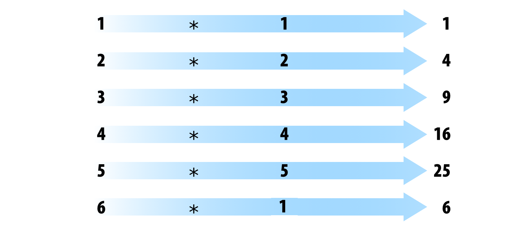

R basics
OTS Tropical Biology 2023
Organization for Tropical Studies
Marcelo Araya-Salas, PhD
2023-06-14
Objetives
Revisit the basic syntax and data structures in R
Get familiar with documentation and help resources
What is R?
- A free Domain-Specific-Language (DSL) for statistics and data analysis
- A collection of over 18949 (mar-9-2022) libraries
- A large and active community across industry and academia
- A way to talk “directly” to your computer
Historically:
- Based on the S Programming Language
- Around 20 years old (Lineage dates from 1975 - almost 40 years ago)

Rstudio
Integrated development environment (IDE) for R. Includes:
- A console
- Syntax-highlighting editor that supports direct code execution
- Tools for plotting, history, debugging and workspace management

Elements of the R language
- Vectors
- Lists
- Matrices
- Data Frames
- Tables
- Functions (including operators)
Data structure
The basic data structure in R is the vector. There are two basic types of vectors: atomic vectors and lists. They differ in the types of their elements: all elements of an atomic vector must be the same type, whereas the elements of a list can have different types. When working with bi-dimensional data matrices are similar to atomic vectors in the sense that they can only contain elements from the same type. Data frames, similar to lists, can contain heterogeneous data types:
| Homogeneous | Heterogeneous | |
|---|---|---|
| 1d | Atomic vector | List |
| 2d | Matrix | Data frame |
| nd | Array |
R has no 0-dimensional elements (scalars). Individual numbers or strings are actually vectors of length one.
Atomic vectors
These are the building blocks of any other object types. There are 4 basic types of atomic vectors:
- Numeric (double)
- Character
- Factor
- Logical (boolean)
Numeric vectors
Vectors are built using c():
x <- 1
x1 <- c(1)
Character vectors
Character vectors can be built in the same way:
v <- "a"
v <- c("a", "b")Vectors can only contain entries of the same type. Different types will be coerced to the most flexible type:
v <- c(10, 11, 12, 13)
class(v)
## [1] "numeric"
y <- c("Amazona", "Ara", "Eupsittula", "Myiopsitta")
class(y)
## [1] "character"
x <- c(1, 2, 3, "Myiopsitta")
x
## [1] "1" "2" "3" "Myiopsitta"
class(x)
## [1] "character"
Factors
A factor is a vector that can contain only predefined values, and is used to store categorical data.
Factors are built on character vectors using two attributes:
- class “factor”: makes them behave differently from regular integer vectors
- levels: defines the set of allowed values
x <- factor(c("a", "b", "b", "a"))
x## [1] a b b a
## Levels: a blevels(x)## [1] "a" "b"str(x)## Factor w/ 2 levels "a","b": 1 2 2 1
Logical vectors
These are binary vectors than containing TRUE and/or
FALSE elements:
lv <- c(TRUE, FALSE)Notice that TRUE and FALSE are objects that
already exist in the R environment so they don’t need to be quoted.
Missing values
Missing values are specified with NA, which is a logical vector of
length 1. NA will always be coerced to the correct type if used inside
c():
v <- c(10, 11, 12, 13, NA)
class(v)
## [1] "numeric"
v <- c(1:3, NA)
class(v)
## [1] "integer"
Lists
Can contain objects of different classes and sizes. Lists are built using list():
l <- list("a", 1, FALSE)
l## [[1]]
## [1] "a"
##
## [[2]]
## [1] 1
##
## [[3]]
## [1] FALSEclass(l)## [1] "list"str(l)## List of 3
## $ : chr "a"
## $ : num 1
## $ : logi FALSE… and dimensions:
l <- list(c("a", "b"), c(1, 2, 3), c(FALSE, TRUE, FALSE, FALSE))
str(l)## List of 3
## $ : chr [1:2] "a" "b"
## $ : num [1:3] 1 2 3
## $ : logi [1:4] FALSE TRUE FALSE FALSE
Matrices
All entries are of the same type:
m <- matrix(c(1, 2, 3, 11, 12, 13), nrow = 2)
dim(m)## [1] 2 3m## [,1] [,2] [,3]
## [1,] 1 3 12
## [2,] 2 11 13class(m)## [1] "matrix" "array"m <- matrix(c(1, 2, 3, 11, 12, "13"), nrow = 2)
m## [,1] [,2] [,3]
## [1,] "1" "3" "12"
## [2,] "2" "11" "13"
Can be created by modifying the dimension attribute:
c <- 1:6
is.matrix(c)## [1] FALSEattributes(c)## NULLdim(c) <- c(3, 2)
c## [,1] [,2]
## [1,] 1 4
## [2,] 2 5
## [3,] 3 6is.matrix(c)## [1] TRUEattributes(c)## $dim
## [1] 3 2
Data frames
Special case of lists. Can contain entries of different types:
m <- data.frame(ID = c("a", "b", "c", "d", "e"), size = c(1, 2, 3,
4, 5), observed = c(FALSE, TRUE, FALSE, FALSE, FALSE))
dim(m)## [1] 5 3m## ID size observed
## 1 a 1 FALSE
## 2 b 2 TRUE
## 3 c 3 FALSE
## 4 d 4 FALSE
## 5 e 5 FALSEclass(m)## [1] "data.frame"is.data.frame(m)## [1] TRUE
But vectors should have the same length:
m <- data.frame(ID = c("a", "b", "c", "d", "e"), size = c(1, 2, 3,
4, 5, 6), observed = c(FALSE, TRUE, FALSE, FALSE, FALSE))## Error in data.frame(ID = c("a", "b", "c", "d", "e"), size = c(1, 2, 3, : arguments imply differing number of rows: 5, 6
Exercise
Create a vector with 5 numbers
Create a character vector with 5 elements
Create a numeric matrix with 5 rows and 4 columns
Create a data frame with the two vectors creating in
1and2as columnsMake a list containing the matrix from
3and the data frame from4
Functions
All functions are created by the function function() and
follow the same structure:

* Modified from Grolemund 2014
R comes with many functions that you can use to do sophisticated tasks:
# built in functions
bi <- builtins()
length(bi)## [1] 1375sample(bi, 10)## [1] ".Library.site" "as.numeric_version" "dynGet"
## [4] "pi" "match.fun" "as.pairlist"
## [7] "is.double" "units.difftime" "strtoi"
## [10] "curlGetHeaders"
Operators are functions:
1 + 1## [1] 21 + 1## [1] 22 * 3## [1] 62 * 3## [1] 6
Most commonly used R operators
Arithmetic operators:
| Operator | Description |
|---|---|
| + | addition |
| - | subtraction |
| * | multiplication |
| / | division |
| ^ or ** | exponent |
1 - 2## [1] -11 + 2## [1] 32^2## [1] 4
Logical operators:
| Operator | Description |
|---|---|
| < | less than |
| <= | less than or equal to |
| > | greater than |
| >= | greater than or equal to |
| == | exactly equal to |
| != | not equal to |
| !x | Not x |
| x | y | x OR y |
| x & y | x AND y |
| x %in% y | match |
1 < 2## [1] TRUE1 > 2## [1] FALSE1 <= 2## [1] TRUE1 == 2## [1] FALSE1 != 2## [1] TRUE1 > 2## [1] FALSE5 %in% 1:6## [1] TRUE5 %in% 1:4## [1] FALSE
Most functions are vectorized:
1:6 * 1:6
* Modified from Grolemund & Wickham 2017
## [1] 1 4 9 16 25 361:6 - 1:6## [1] 0 0 0 0 0 0R recycles vectors of unequal length:
1:6 * 1:5
* Modified from Grolemund & Wickham 2017
## Warning in 1:6 * 1:5: longitud de objeto mayor no es múltiplo de la longitud de
## uno menor## [1] 1 4 9 16 25 61:6 + 1:5## Warning in 1:6 + 1:5: longitud de objeto mayor no es múltiplo de la longitud de
## uno menor## [1] 2 4 6 8 10 7
Logical operators are also vectorized:
c("a", "b", "a") == "a"## [1] TRUE FALSE TRUEData subsetting
Indexing
Elements within objects can be called by indexing. To subset a vector simply call the object position using square brackets:
x <- c(1, 3, 4, 10, 15, 20, 50, 1, 6)
x[1]## [1] 1x[2]## [1] 3x[2:3]## [1] 3 4x[c(1, 3)]## [1] 1 4
Elements can be removed in the same way:
x[-1]## [1] 3 4 10 15 20 50 1 6x[-c(1, 3)]## [1] 3 10 15 20 50 1 6
Matrices and data frames required 2 indices
[row, column]:
m <- matrix(c(1, 2, 3, 11, 12, 13), nrow = 2)
m[1, ]## [1] 1 3 12m[, 1]## [1] 1 2m[1, 1]## [1] 1m[-1, ]## [1] 2 11 13m[, -1]## [,1] [,2]
## [1,] 3 12
## [2,] 11 13m[-1, -1]## [1] 11 13df <- data.frame(family = c("Psittacidae", "Trochilidae", "Psittacidae"),
genus = c("Amazona", "Phaethornis", "Ara"), species = c("aestiva",
"philippii", "ararauna"))
df## family genus species
## 1 Psittacidae Amazona aestiva
## 2 Trochilidae Phaethornis philippii
## 3 Psittacidae Ara araraunadf[1, ]## family genus species
## 1 Psittacidae Amazona aestivadf[, 1]## [1] "Psittacidae" "Trochilidae" "Psittacidae"df[1, 1]## [1] "Psittacidae"df[-1, ]## family genus species
## 2 Trochilidae Phaethornis philippii
## 3 Psittacidae Ara araraunadf[, -1]## genus species
## 1 Amazona aestiva
## 2 Phaethornis philippii
## 3 Ara araraunadf[-1, -1]## genus species
## 2 Phaethornis philippii
## 3 Ara araraunadf[, "family"]## [1] "Psittacidae" "Trochilidae" "Psittacidae"df[, c("family", "genus")]## family genus
## 1 Psittacidae Amazona
## 2 Trochilidae Phaethornis
## 3 Psittacidae Ara
Lists require 1 index within double square brackets
[[index]]:
l <- list(ID = c("a", "b", "c", "d", "e"), size = c(1, 2, 3, 4, 5),
observed = c(FALSE, TRUE, FALSE, FALSE, FALSE))
l[[1]]## [1] "a" "b" "c" "d" "e"l[[3]]## [1] FALSE TRUE FALSE FALSE FALSE
Elements within lists can also be subset in the same string of code:
l[[1]][1:2]## [1] "a" "b"l[[3]][2]## [1] TRUE
Exploring objects
str(df)## 'data.frame': 3 obs. of 3 variables:
## $ family : chr "Psittacidae" "Trochilidae" "Psittacidae"
## $ genus : chr "Amazona" "Phaethornis" "Ara"
## $ species: chr "aestiva" "philippii" "ararauna"names(df)## [1] "family" "genus" "species"dim(df)## [1] 3 3nrow(df)## [1] 3ncol(df)## [1] 3head(iris)## Sepal.Length Sepal.Width Petal.Length Petal.Width Species
## 1 5.1 3.5 1.4 0.2 setosa
## 2 4.9 3.0 1.4 0.2 setosa
## 3 4.7 3.2 1.3 0.2 setosa
## 4 4.6 3.1 1.5 0.2 setosa
## 5 5.0 3.6 1.4 0.2 setosa
## 6 5.4 3.9 1.7 0.4 setosatail(iris)## Sepal.Length Sepal.Width Petal.Length Petal.Width Species
## 145 6.7 3.3 5.7 2.5 virginica
## 146 6.7 3.0 5.2 2.3 virginica
## 147 6.3 2.5 5.0 1.9 virginica
## 148 6.5 3.0 5.2 2.0 virginica
## 149 6.2 3.4 5.4 2.3 virginica
## 150 5.9 3.0 5.1 1.8 virginicaView(df)
Exercise
Extract the first column from the example data
irisExtract the second row from the example data
irisExtract the second column and second and third row from the example data
irisHow many columns and how many rows does
irishas?
Subsetting based on conditions
Logical vectors can be used to subset objects. We can use
TRUE to choose those positions to be kept and
FALSE for those positions to be excluded:
v <- c(1, 2, 3, 4)
v[c(FALSE, FALSE, TRUE, TRUE)]## [1] 3 4v[c(TRUE, FALSE, FALSE, TRUE)]## [1] 1 4Notice that logical vectors can be obtained by evaluating a
condition. For instance, which elements in v are higher
than 2:
v > 2## [1] FALSE FALSE TRUE TRUEIf so, conditional evaluations can then be used to generate logical vectors to be used for subsetting:
v[v > 2]## [1] 3 4v[v < 3]## [1] 1 2
Exercise
Use square braindexing
Subset the observations in
irisfor which sepal length is lower than 5 and save it as a new data frameSubset the observations in
irisfor which petal width is equal or higher than 2 and save it as a new data frameSubset the observations in
irisbelonging to the species “virginica”
*(Yo must not use the function subset())
Style matters
Based on google’s R Style Guide
File names
File names should end in .R and, of course, be meaningful:
- GOOD: predict_ad_revenue.R
- BAD: foo.R
Object names
Variables and functions:
- Lowercase
- Use an underscore (_) (HW style)
- Generally, nouns for variables and verbs for functions
- Strive for names that are concise and meaningful (not always easy)
- Avoid using names of existing functions of variables
- GOOD: day_one: day_1, mean.day(),
- BAD: dayOne, day1, firstDay_of.month, mean <- function(x) sum(x), c <- 10
Syntax
Spacing:
- Use spaces around operators and for argument within a function
- Always put a space after a comma, and never before (just like in regular English)
- Place a space before left parenthesis, except in a function call
-GOOD:a <- rnorm(n = 10, sd = 10, mean = 1)
-BAD:a <- rnorm(n = 10, sd = 10, mean = 1)
Curly brackets:
- An opening curly brace should never go on its own line
- Closing curly brace should always go on its own line
- You may omit curly brackets when a block consists of a single statement
-GOOD:if (is.null(ylim)) {
ylim <- c(0, 0.06)
}
if (is.null(ylim)) ylim <- c(0, 0.06)
-BAD: -BAD:
if (is.null(ylim)) ylim <- c(0, 0.06)
if (is.null(ylim)) {
ylim <- c(0, 0.06)
}
Assigments:
- Use <-, not =
-GOOD:x <- 5
-BAD:x = 5
Commenting guidelines:
- Comment your code
- Entire commented lines should begin with # and one space
- Short comments can be placed after code preceded by two spaces, #, and then one space
# Create histogram of frequency of campaigns by pct budget spent.
hist(df$pct.spent,
breaks = "scott", # method for choosing number of buckets
main = "Histogram: fraction budget spent by campaignid",
xlab = "Fraction of budget spent",
ylab = "Frequency (count of campaignids)")
R documentation
Most R resources are extremely well documented. So the first source for help you should go to when writting R code is the R documention itself. All packages are documented in the same standard way. Getting familiar with the format can simplify things a lot.
Package documentation

Reference manuals
Reference manuals are collections of the documentation for all functions in a package (only 1 per package):
Function documentation
All functions (default or from loaded packages) must have a documentation that follows a standard format:
`?`(mean)
help("mean")
This documentation can also be shown in Rstudio by pressing
F1 when the cursor is on the function name
If you don’t recall the function name try apropos():
apropos("mean")## [1] ".colMeans" ".rowMeans" "colMeans" "kmeans"
## [5] "mean" "mean.Date" "mean.default" "mean.difftime"
## [9] "mean.POSIXct" "mean.POSIXlt" "rowMeans" "weighted.mean"
Vignettes
Vignettes are illustrative documents or study cases detailing the use of a package (optional, can be several per package).
Vignettes can be called directly from R:
vgn <- browseVignettes()vignette()They should also be listed in the package’s CRAN page.
Exercise
What does the function
cut()do?What is the
breaksargument incut()used for?Run the first 4 lines of code in the examples supplied in the
cut()documentationHow many vignettes does the package warbleR has?
References
- Advanced R, H Wickham
- Google’s R
Style Guide
- Hands-On Programming with R (Grolemund, 2014)
Session information
## R version 4.2.2 Patched (2022-11-10 r83330)
## Platform: x86_64-pc-linux-gnu (64-bit)
## Running under: Ubuntu 20.04.5 LTS
##
## Matrix products: default
## BLAS: /usr/lib/x86_64-linux-gnu/blas/libblas.so.3.9.0
## LAPACK: /usr/lib/x86_64-linux-gnu/lapack/liblapack.so.3.9.0
##
## locale:
## [1] LC_CTYPE=es_ES.UTF-8 LC_NUMERIC=C
## [3] LC_TIME=es_CR.UTF-8 LC_COLLATE=es_ES.UTF-8
## [5] LC_MONETARY=es_CR.UTF-8 LC_MESSAGES=es_ES.UTF-8
## [7] LC_PAPER=es_CR.UTF-8 LC_NAME=C
## [9] LC_ADDRESS=C LC_TELEPHONE=C
## [11] LC_MEASUREMENT=es_CR.UTF-8 LC_IDENTIFICATION=C
##
## attached base packages:
## [1] stats graphics grDevices utils datasets methods base
##
## other attached packages:
## [1] kableExtra_1.3.4 knitr_1.42
##
## loaded via a namespace (and not attached):
## [1] rstudioapi_0.14 xml2_1.3.4 magrittr_2.0.3 rvest_1.0.3
## [5] munsell_0.5.0 viridisLite_0.4.2 colorspace_2.1-0 R6_2.5.1
## [9] rlang_1.1.1 fastmap_1.1.1 stringr_1.5.0 httr_1.4.6
## [13] tools_4.2.2 webshot_0.5.4 xfun_0.39 cli_3.6.1
## [17] jquerylib_0.1.4 systemfonts_1.0.4 htmltools_0.5.5 assertthat_0.2.1
## [21] yaml_2.3.7 digest_0.6.31 lifecycle_1.0.3 klippy_0.0.0.9500
## [25] formatR_1.12 vctrs_0.6.2 sass_0.4.6 glue_1.6.2
## [29] cachem_1.0.8 evaluate_0.21 rmarkdown_2.21 stringi_1.7.12
## [33] compiler_4.2.2 bslib_0.4.2 scales_1.2.1 svglite_2.1.0
## [37] jsonlite_1.8.4